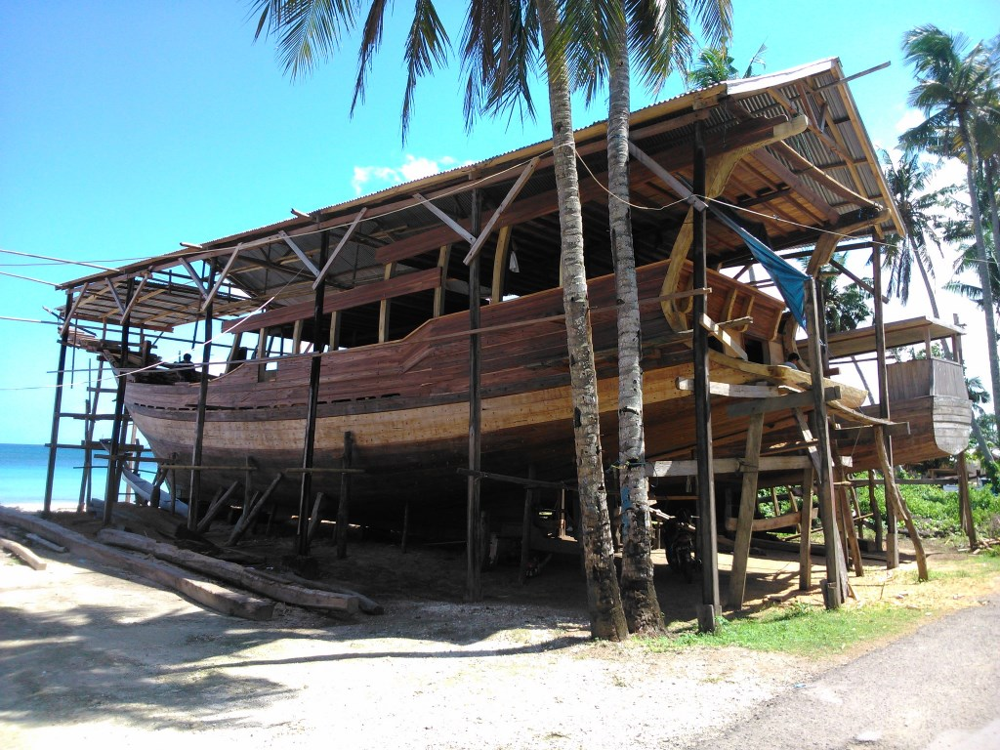
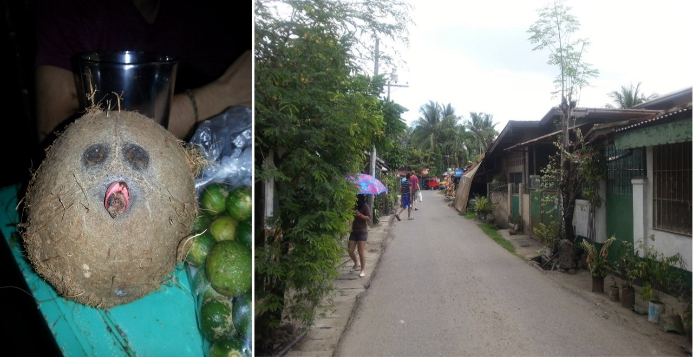

anno 2015
Rat Fight. Cartagena. Colombia
posted on 29.12.2015 by Qing
One of the highlights of our time in Cartagena was a Rat Fight that happened between a rat, Lars, and a cat.
We stayed at a local hostel where people didn't speak English. The rooms were simple furnished. When walking through the deep corridor of the house, we could see rooms pop up from both sides one after another. The air was warm and stuffy. We picked a big room where one could feel a bit more space and had a bit more light. The windows were made from several holes on the upper part of the wall.
It was cool enough at night. I fell asleep quickly and easily.
Suddenly, I was awaken by a feeling of horror. Lars suddenly jumped out of the bed to the middle of the room. "Oh, No, I thought it was you..." he shouted.
"What? Was the door open? Was someone in the room? Did we get robbed?"
"I totally thought it was you..." he continued. "But it was a RAT!"
"The rat was crawling on me. I could feel his claws..." "He walked on me... he walked on my legs...." "Why is a rat not afraid of human... why did he walk on me...?" "It was a big rat..."
Like this, Lars started his battle with this big scary mysterious rat.
He stared into the room in the middle of the night for (it felt) hours until he spotted the rat walked slowly and peacefully out of the room along a cable that stretched from a closet to the windows. He cleaned out all our food and trashes from the room. He cleaned and re-organized all the stuffs around the closet. Until one day, he brought back a cat from the street.
The cat appeared cutely and curiously. I guess she had no idea about her mission here, but just liked people and liked our room. We placed the cat near the closet, she ran towards the bed. We placed again the cat around the closet, she ran towards the other side of the bed. After several tries, her attention were finally drawn to the closet. She started to sniff. "Yes! She's smelling something! She's going to find the rat..." We were excited. She walked around the closet for several rounds and went into the open drawer. "Oh, look, she is going to get the rat... but... maybe the cat is too small and the rat is too big. It was really a big rat! She will get hurt..." We started to worry. Several minutes had passed and no sound came out from the closet. Our wonders and worries grew, while the cat walked out of the closet as nothing had happened.
That night, instead of a rat, we had a cat in our room. And yes, she kept us awake more than the rat did the night before.
In the end, Lars fixed the open drawer and no more cats or rats for the rest of our time in Cartagena. Life went back into peace and harmony. :)
First encounter with South America - Cartagena, Colombia
posted on 29.12.2015 by Qing
Cartagena welcomed us with its heat, its festival and its safety challenges.
On our way from the airport to the center on a local bus, I was touched and amazed. Finally, after all the months' time in Europe and the US, with all the modern infrastructures, clean and organized streets, and well managed behaviors, I must say that I missed this chaos. I felt alive again on this tiny colorful bus which generated a strong shake every time it had to slow down, to speed up, or to make a turn. But I loved it. Looking out of the window, people were standing in groups and chatting, there were vendors selling street food, there were dirt and trashes around the corner, motorcycles were being used as vehicles, and loud music were screaming out from restaurants. All these seemed to be yelling to me: welcome to the world.
I swam and dreamed in my self-imagined happiness until the bus was approaching the center. After one stop, one guy got on the bus and tried to sell us something. He acted aggressively and I felt afraid. I passed on the cash, which was the changes from buying the bus tickets, in my hand to Lars and he moved his attention to Lars as well. He talked to Lars for a long time. Rather than talking, I would describe his attitude more as pushing and threatening. This incident suddenly pulled me out of my dream. Yes, here is the reality. I may love and enjoy the vitality and diversity in a world like this, but also have to bear the consequences it brings. Finally he got off the bus. Another local passenger started to try to tell us something. We didn't fully understand his rapid Spanish, but one thing I thought we understood. That was when he formed his hand to the shape of a gun and pointed it towards his head.
For the first time in our trip, we felt unsafe on the streets. We were constantly warned by locals to not show any valuables on the street, even under the bright daylight. We were told not to use our laptops at the front entrance of our hostel. We were suggested not to walk on the streets at night. So we used our mobile phones as GPS under the cover of a scarf. We hided in the small room behind the entrance of our hostel to use Wi-Fi. We started to head back from the city soon after the sun went down. And we brought the least possible things and cashes with us when we have to go out. But all these, were not comparable to the mental restlessness we felt in this city.
Lucky as we were, Cartagena was preparing for its Independence Day Festival when we arrived. Two days later, we experienced a Colombian parade and foam fights in its beautiful old town.
Yes, the old town of Cartagena is beautiful. I guess this is probably the main reason why Cartagena is the most visited and touristic city in Colombia. The old town has an official name as Cartagena's colonial walled city, and it was designated a UNESCO World Heritage Site in 1984. During the colonial period, it served a key role in administration and expansion of the Spanish empire.
Our short stop-over for a few days with Couchsurfing and many aligators.
Details follow...
Back at home, together with QingQing, her first time in Germany.
Details follow...
The very surprising, spontaneous und unplanned trip to Turkey.
Details follow...
Visit home and many snack parties from HongKong up to Pejing. Njammi!
Details follow...
A trip to the more modern, westernized copy of South India.
Details follow...
Volunteering in a school and traveling around the (very) southern part.
Details follow...
The first days in good old Indo - Sulawesi, Indonesia
posted on 29.12.2015 by Lars
As planed at the beginning of this year, Adolf, our Couchsurfing friend from Yogyakarta and me made a trip to Sulawesi.
We were aiming for mainly two regions on this trip. The one was the Tana Toraja mountain area, which is rich of unique culture, beautiful landscapes and a very pleasant climate.
The other targeted area were the Togean islands in the middle of the gulf (of Tomini), the upper part of Sulawesi is surrounding. There we were hoping for another
cultural experience, brilliant beaches and pristine waters to snorkel or dive in.
I flew from Singapore directly to Yogyakarta (Java), where we met last year, when Qing and me were living "on his couch" for about a week.
Before we went on to Surabaya to fly to Makassar (Sulawesi), I could enjoy the nice Javanese food again (inclusive my favourite Gudek),
some Bintang and a pancake party at his place.
After the arrival on Sulawesi, we hitch-hikied directly the next day to the south eastern tip of the island.
Because of my Bahassa still sucks, we had the quite efficient team work strategy, that I (the obvious white guy!) attract the cars/trucks to stop,
while he was taking the communication and negotiation part. So when we arrived at night in Bira, we set up the tend directly at the beach. Easy!
The next day we continued our hitch-hiking adventure to another town at the sea, where we discovered many traditional Bugis (ethnic group) shipyards.
At this place they build everything made of wood from small boats up to bigger cruise ships by there plain hands. Instead of using
technology and advanced tools, they still do it in their ancestor way, centuries ago. Very impressive!!

Culture shock in Tana Toraja - Sulawesi, Indonesia
posted on 29.12.2015 by Lars
Due to the more and more difficult infrastructure, we decided to change out way of transportation towards Tana Toraja and chose mini-/bus. But even this took us a long ride, with a roughly calculated average speed of 30km/h....and this over 14h!!! .....yes, we were thinking about bicycling! ;-)
The few days we spend in Toraja were one of the most intense of this trip.
The Torajan people still practice several of there origin traditions. The possibly most popular is there tradition of burial celebrations. These celebrations join (up to) hundreds of guests, family, acquaintances and strangers (like us). You were very lucky to be there at the right time, when such a celebration took place.
So all the sudden, like it had to be, we heard of such a celebration at our first day and drove there with the rented motorbike to participate ... completely unprepared! But like everyone else, they also welcomed us, gave us there self made rice liquor and a fresh butchered meet-dish.
In Rantepao we found a nice couchsurfer who took us around aaaaand....also to another big traditional celebration. It was a house renovation finishing party and these guys celebrate it like someone wan the lottery or alike. Amazing! Seriously hundreds of people gathered at the wide place and next to traditional music and dances, they made a pure massacre. For myself, it was one of these WOW-experiences, but I really don't need a second time...
It was an experience, but also a bloody one. It felt, that for each guest, they killed one pig - and this, next to us while we ate! So actually my usual quite good appetite was somewhere else, but not with me at the very moment. :-P
One day Adolf and me made a very nice trip to a mountain nearby to hike towards it's summit.
We saw again many traditional, rural villages, amazing views over the fresh, green valley and the city.
During our lunch break in a hut for the local rice farmers, an old grandpa passed by and had together with
a couple of kids a seat with us. Eventually he took out a little rhythm instrument made of bamboo and played a sound
that could have come from a Australian Didgeridoo. We tried it too but unsurprisingly, failed!
Encouraged by his words, if I play it 2 weeks long the whole day, I will be able to play it, so I bought it
to add it to my collection of instruments.
Island life and an unexpected end - Sulawesi, Indonesia
posted on 29.12.2015 by Lars
Back on the road, still digesting the past intensive days, we made another easy and nice couchsurfing stop for two days in Poso. After this we partially hitch-hiked again the last part to the ferry town, to get to the Togean Islands. There we spent a great island life, had a real jungle hike to a volcano, had some very good dives or snorkelling trips and every day fish.
We also made a little walk to the other side of the island to snorkel in one of these bays. In accompany of us, there were two very cute and nice dogs from the bungalow complex, were we stayed. These two guys were kind of guiding us through the jungle. At the other bay we were snorkelling around when it suddenly became very dark.
We totally forgot the time so started to head back, when it was almost dark and we didn't bring any torch or phone. We made it to the middle of the track with the big big help of our two fury guides, when they suddenly disappeared, chasing something. A few moments later, it became clear, they are hunting a wild pig in the black darkness, very close to us.
That was frightening us so we hide us somehow behind a palm tree and thought about, how to defend us. Luckily the pig flew somewhere and we could make the rest of the track, with a little faster...heartbeat.
We planed to end these days with a homestay on some small islands, another ethnic group, the seafarer Bajau live. We found a track to such a place and had one night there, with some locals. The next day I felt pretty unwell, but we explored the two football fields big, cone shaped island. During our hike we gathered probably more then the half of the very young population there.
The kids were hanging around with us, playing, singing, dancing. Very nice and cute, so we finished this gathering later on with buying a notebook and pencil for everyone. During the day, my situation became more and more worse and eventually I had to be "evacuated" to a more sophisticated place due to pain, nausea and strong weakness. We made it all the way up to Manado in the north of Sulawesi and I was still suffering. Afraid off the possibility of a second Dengue rush, we went to the hospital to get a check-up and the result: yes, I already had Dengue once, but this time it's a salmonella infection.
I prepared my mind already for a real evacuation out of Asia at all, because the third Dengue infection is very very threatening, quite often even deadly.
This marked the end of our nice trip together. Adolf went back at home to Yogyakarta and I went back to Kuala Lumpur with a 2day stopover in Balikpapan (Borneo).
But from Borneo I didn't see much then the city, a cafe and my hotel room that I got myself for having a rest while taking the Antibiotics.
Summarizing, this trip to one of the Indonesian islands was a great mixture of culture, nature, island life, camping, hitch hiking, homestay and couchsurfing.
See you next time Indonesia, then maybe in ... Sumatra?!
The artifical tip south of Malaysia - Singapore
posted on 29.12.2015 by Lars
Two days before the departure to Yogyakarta, I made my way to Singapore where I spent 2 fun days or afternoons with the local
couchsurfer Pang. Even this fancy high-tech city feels superficial, it is still worth a trip for a few days to get an impression how life could be in this urban city state. Pang also told me some interesting economic and political facts about his home town or home country that all integrates into the more and more establishing big picture in my mind about South East Asia.
While missing Qing: Licking my wounds with Dim Sum - Malacca, Malaysia
posted on 29.12.2015 by Lars
Sad about being alone again, I visited KL for two more days before I moved on to Malacca, to spend almost a week there.
I really enjoyed this town, full of colonial history and a pretty nice, laid back centre. There I also met several travellers to spend some time together. For example I went with Jeff from NY to the gym what I didn't do for already a long long time but even this usual and daily activity had a bigger meaning to me.
Another ritual in this week was the breakfast. Day by day I went to the same Chinese restaurant to have super tasty Dim Sum and now I'm not an expert, but at least I know the one or the other, although not by name! ;-)
After this week I went back to KL, were I decided to have a short trip to the national park Taman Negaran. There I had nice jungle tracking full of butterflies and leeches.
Our second encounter, 7month later - Kuala Lumpur, Malaysia
posted on 29.12.2015 by Lars
It was around about 7month ago, since we departed but when we met up in KL, it just felt like 3 weeks ago, very familiar and warm.
Because the time was short and so nice together, it passed by very fast.
The first day we visited a little Kuala Lumpur and off cause the Petronas Towers to take some silly pictures and then we went on to Penang, our initial meeting destination. There we had great Indian food we even couldn't find in India itself and also some nice city walk. Because our time was limited, we already went on at the next day to our targeted destination, the Perhentian islands at the east coast of Malaysia. There we spend 6days, had several very nice dives and many other nice hours, filled with island hopping and exploration, Frisbee challenges or just snorkelling/swimming in the pristine waters.
At the 24th of April Qing had to fly to India and we were departed again for 1,5 month.
Together with my parents to Bangkok and the nice island of Koh Chang.
Details follow...
Summary of the stations of the trip with my parents
posted on 29.12.2015 by Lars
- Arriving back in Asia, Bangkok, together with my parents for whom it is the first time being in Asia
- Visiting the ruins of Angkor in Siem Reap, together with Claudi who we met here
- Visiting the great show of the Phare circus project in Siem Reap and Battambang
- Water-taxi tour from Siem Reap to Battambang with seeing a lot of the rural area with its floating villages
- In Battambang eating my first rat and visiting the spectacular daily food-leaving of millions of bats
- Stay in the village Chiro near Kampong Cham, getting to know the OBT charity project
- we went further north to Kratie, visiting the highly endangered Iriwadie river dolphins
- Visit of Phnom Penh and the killing fields
- Having a coffee in the Epic Art Cafe in Kampot and eating crap in Kep
- Snorkelling in Sihanoukville and encountering the very obvious sex tourism
- Enjoying a few days at the whites sand beach I've ever seen in Koh Rong Sanloem
- Back in Thailand, enjoying the bungalow life, my first wreck dive and the Thai Curry (as well as other food) on the island Koh Chang
- spending the last 2 days for my parents in Asia in Bangkok and participating to the Sokran, the water festival in SEA
The Phare circus - Siem Reap, Cambodia
posted on 29.12.2015 by Lars
It is called Phare and is by far not a circus.
It is a really professional show, full of music, artistic, art, dance and acting. The actors of this show are former street kids who got a chance to train their specific art skill at the art school of Phare in Battambang. Due to the potential number of visitors, they moved their main show to Siem Reap. Another smaller one is taking place in Battambang, next to the school. The show was so impressive for myself, even though I already saw several shows like that during my life. This show felt so authentic and not artificial (too professional) although it was professional!
Next to the amazing skills of the actors, it was also the way how they presented it. At one point I also felt touched by the show and almost about to lose tears. Very nice! Everyone how is participating this show will become automatically a donator and supports the school project in Battambang. There they expanded the school over the time with much more buildings and subjects. Nowadays they offer accommodations for the students as well as an elementary school.
Great project that gives the kids the opportunity to a better future, that is worth getting supported! Ah and the best students get employed by famous shows all around the world.
Link to Phare: (http://www.pharecambodiancircus.org/circus/)
Why is it so expensive here?! - Battambang, Cambodia
posted on 29.12.2015 by Lars
Battambang was the only place during the whole journey, where we were able to find the real Cambodian prices for food. It's so strange why all the prices are so high there. I told my parents about Indonesia I were last year and how cheap it can be. And Cambodia supposed to be cheap too because it is a poor third world country. The opposite was the case! We even paid more in average than in the neighbour country Thailand, what is much more sophisticated in comparison.
One problem is the usage of the currencies in Cambodia. As long you are not a local, you pay everywhere only in big/hard USD. There is no chance to get some Riel from the ATM at all. We only had smaller change in Riel. So they round up everything to the next USD. But even then it was too much to pay usually $15 in average for three dishes (even in Kuala Lumpur I pay $1-2 a meal).
Ok Qing says, it is because we were only in the tourist areas but we were walking around the places....so yes, we were definitely in tourist places too, but for sure not the whole time...! Also in other points we made a quite contradictory experience so I think, we may go there again.
Charity Project OPT in Chiro - Kampong Cham, Cambodia
posted on 29.12.2015 by Lars
In that place is a project called OBT (Organization for Basic Training) situated, I wanted to visit. The main focus of this project lays on teaching children basic English. It was nice to get shown the classes where even more advanced students taught the younger ones. It is important for the young rural population the learn how to speak English that accesses them a wide range of jobs in the tourism and the chance to get off the land, towards the city. Next to English they also teach arithmetic, Khmer (the local language) and a traditional/cultural class, including dance or music. It is run by almost only one person (Sophal) who is completely dependent on donations and volunteers to keep this project alive.
Some local stories or meanings - Kampong Cham, Cambodia
posted on 29.12.2015 by Lars
Many of Sophals stories he told me very invented by my question for the Khmer Rouge and where they came from so fast, to do there
genocide. He told me the Khmer version, where they came from. The westernised or also said, the version of the winner, we're able to read everywhere because that's common sense. He said, that the former King Sihanouk and the Vietnamese revolutionist Ho Chi Min had an unofficial agreement. It included the free pass of Vietnamese troops in exchange for former Cambodian provinces, taken by Vietnam. Ho Chi Min played a second game by infiltrating the Cambodian border areas with his (hidden) soldiers. When Ho Chi Min died, he won the war, he infiltrated Cambodia it his communists but he didn't give back the provinces in return. Some years later, these infiltrators, controlled by Vietnam, started the red revolution in the bloody way we know. They let Khmer kill Khmer for a couple of years before the Vietnamese official troops came to pretend to be the friends and have rescued the Cambodian population. It seems, that they still have the power over the Cambodian government like a puppet on a string. The money on Cambodia floats in some private pockets but the biggest part of it to the "big brother" in the east. A too little amount is used to build up
and improve the state itself. This is also another reason, why the prices are that artificially high. Even local chicken he told me, is cheaper in Vietnam. This reminds me at the New Zealand Kiwi, which is cheaper in China than in NZ itself, even after its transportation over the sea. Anyway...he even told me that Angkor Wat is owned by Vietnamese so even this money floats east.
Another usual and since this time everywhere for me obvious fact (world wide!) is about the agricultural companies. How they act and how they made the farmers addicted to their seeds, chemicals and mono-cultures. Already many farmers got bankrupted or even worse (suicide...) because of their sick money making game on costs of everyone, not only the farmers! I met a Malaysian girl Pei, who is working for an NGO, facing exactly such problems and issues. She also approved these methods that are used globally. To break it down it is like that, that farmers have to use there propagated better and more efficient plants. That is already the beginning of the end. First of all, these plants are weaker and less adaptable (e.g. for our changing climate). They need tons of chemicals to survive, but with these chemicals - that the farmer also has to pay - we kill the surroundings as well as the soil itself. The next point is, they prevented the usage of the fruits as new seeds because with them it's not possible any longer, to grow new fruit plants. Means, the farmers are even more addicted to these companies because now they need to buy new seeds from them. And so on and so on... it is super sick but happens all around us, just everywhere except of our own garden and a few organic farms. Sophals own sister got also a victim of these methods and got in loan off several thousands of dollars.
One word to the kids and they school system. As I wrote is the money in everyone else hand but not in the Cambodias. It seems even not enough for a sustainable salary for the teachers to make a life. The governmental salary is just 50% for living. For the rest the teacher have to charge the pupils and that from the very early grade. So comes that the poorer parents even struggle with sending their kids to elementary school... That is why giving especially the kids in the countryside some additional education, is so important.
Thoughts about Cambodias red history - Phnom Penh, Cambodia
posted on 29.12.2015 by Lars
We visited one of the country's biggest killing fields, set up by the Khmer Rouge, near Phnom Penh. What happened there can be read at Wikipedia, but going there and listening to the rarely but very informative audio guide, created the depressive atmosphere. Whatever there are for reasons and conspiracies about the background, it is just the fact and should be a reminder for every human, that such cruel and inhuman happenings can take place everywhere at any time again. So even though we should be more wise and should have learned through our long history, there is still need for patience at any time.
It is like the Nazi General Hermann Goering in an interview to the Nuremburg Trails summarized:
" Naturally, the common people don't want war; neither in Russia nor in England nor in America, nor for that matter in Germany. That is understood [...] the people can always be brought to the bidding of the leaders. That is easy. All you have to do is tell them they are being attacked and denounce the pacifists for lack of patriotism and exposing the country to danger. It works the same way in any country. "
anno 2014
|
Myanmar
|
November 2014 - January 2015
|
Qing's meditation trip to Myanmar.
Details follow...
Jakarta. Indonesia. 2014
posted on 07.08.2014 by Qing
I was told that Jakarta was a big messy chaotic city, I didn't have to visit there. But at that time, I would like to see the capital of each country, no matter how it was like.
A girl called Ika accepted my couch surfing request. On her profile picture, she had very short hair, and was lifted up by several people to the air. What a cool girl, I thought.
We agreed to meet up at a bus station and she came riding her motorbike. She was tiny. Even for the average smaller South East Asian people, she was tiny. She carried the bigger me and my even bigger backpack on her motorbike. While holding her, I was worried. If there comes one sudden accelerate, am I going to drag her out of her motorbike? We rode for a long time, through the, as rumor said, messy and chaotic Jakarta. There were traffic jams almost all the way, and we were always surrounded by tons of other motorbikes. This reminded me Phnom Penh, where the motorbikes were going fast through narrow lanes and would try every possible way to get forward for just a little bit. There, I felt time fly back, to the wonderful time in the wonderland, Cambodia.
We went through many narrow alleys, passed many residents sitting or standing in front of their houses before we arrived her home. She parked her motorbike in a little yard in front of her house. We entered the house to the living room, it was dark. There was a TV in the corner and a sofa right next to the door. Later, that was the place we had our meals. From the living room walking towards the back of the house, there was the kitchen, where her mother cooked delicious curry beef stews, and she made by far my favorite Indonesia food: the Indo Mien. At the entrance of the kitchen, stairs leaded me to the second floor, where my room located. Like many other places in Indonesia, people place either a mattress or a carpet, and sleep on the floor. I slept there for 4 nights, it was comfortable.
During the days there, I did one thing special. It wasn't anything special for most of the people there, but it was for me. I fasted. For 2 days. I didn't eat or drink anything for 2 days during the day time when the sun was still above the horizon. Instead, I woke up at 3 am every day and joined her family to their pre-fasting meal. It wasn't easy. Even though almost the whole country was fasting, sometimes we could still see people eating or drinking on the street. That amplified our thirst and hunger. During the late afternoons, I felt weak. I felt the energy were fading away from my body. I could disappear in the air or dissolve into the ground.
To end a whole month's fasting, Indonesians celebrate it with a big festival, which is considered as Christmas in the western world, and as the Chinese New Year in China. That day I woke up as usually, no one was at home. ? Where was everyone? Did I wake up too late and missed the chance to join them to the mosque? I got myself ready and planned to look for them. I walked out of the house, I kept walking and walking, and, wow... what is this in front of me? I saw streets after streets in white. The streets were full of people dressing in white, kneeling on the ground, praying. I looked over them, I couldn't see the end. The town was quiet and empty, with only preying melodies hovering in the air.
Her family made me think of home. That was what I thought when I was sitting on the couch in their living room. I can't remember what it was anymore. Maybe it was the warmness and calmness in the house, or maybe it was the feeling of surrounded by many family members, or maybe, it was the delicious mama-made dishes, that made me think about home. I was treated as a member of their family.
In the end, Jakarta might be a 'messy' city, but her family and friends made it a place worth to stay. I left there with a lot of gratitude, to her, to her family, and to her friends.
There, I made my second toy on the trip, a teddy bear. I call him/her The Ika Bear.
Manila again. Philippines. 2014
posted on 02.08.2014 by Qing
My trip in the Philippines ended in Manila again. There I meet other old colleagues who I haven't seen for two years. I was very happy to see them again, especially one of them. He's name is James. He was a team member of our project. During those hectic days, he was one of the two members who kept working with them easy. He always knew what he was doing, he always delivered on time, and he always explained his ideas clearly. When the project was under tight schedule, he was the one who was willing to put extra effort. As a new project manager working with busy experienced experts, I was thankful that we had a team member like him.
All together, we went to their favourite Filipino restaurant. There, they ordered food that I've never seen during my one month's time in the Philippines. They were diverse and delicious. Yes, that's another thing I noticed from travelling: locals knows what to eat.
Malapascua. Philippines. 2014
posted on 29.07.2014 by Qing
Here I met Lars.
Like every time I visit an island, I didn't book any accommodation. The same as last time, a local guy helped me to find a cheap room. And this time, he was also trying to help me find a cheap good place to dive. We went into many dive shops, and none of them was satisfactory. Until we came across this one.
It's a dive shop very far from where I live. I think we needed to drive across a small hill on motorbike to get there. Anyway, we went there, and that was the first time I saw Lars. I was standing there waiting to talk to the staff. Lars was around. I think he smiled at me or said hello or something. It felt friendly. "Hmm, this place has a friendly environment." I noted to myself. Later, I talked to the dive shop manager, she was good, professional and offered me a good package price. I decided to dive there.
On the next day, all the divers boarded on the same boat to go to the same dive site. There were about ten of us. As usual, I started to observe everyone. Lars appeared to be a bit funny, or wired in a funny way to me. Anyway, it was a bit different from the others. He looked around here and there and it seemed like he was planning or wondering about something. He didn't always sit straight or behave in a serious way as the others. He looked more like a traveller. He could have belonged to the 'dodgy' group.
During one break of the many dives, we started to talk. Then I learnt that we had similar background, similar experiences, and similar reasons to start long-term travelling. Yes, he felt close and very easy to talk to. Later that day, Lars and me made a tour around almost the whole island. That was a very good time. I think during the entire tour, we almost never stopped talking. There was beautiful sea and beautiful sunset. There was a woman whose house was damaged by typhoon and we wanted to help. There was the sea water full of shinning sparkling fishes that we could jump into. There were many crabs and many chasing of the crabs. There was a light house. And there were fisherman's wife and kids preparing fishnet by sticking thousands of tiny fishes onto the net. Our tour of the island lasted until late at night. At such a late hour, in a local restaurant, the way he made his order just made me and the waitress couldn't stop laughing. At that time, I had no idea that he was serious about his ordering.
That day, he dropped me in front of my hostel. I liked his red raining jacket and the big warm good night hug. For a long time, that was the image I had when I thought of him. The big Lars in the big red jacket.
Malapascua is famous for its thresher sharks. It's the kind of shark whose tail is pointing up and is almost as long as its body. It's very cute for being a shark. We made quite an effort to try to see them. First dive. We stayed at the same spot surrounded by sand and darkness for more than half an hour. We didn't see anything. We dove again. We stayed in some sandy and rocky area for about twenty minutes. Luckily, some one of us made a signal. He spotted a shark! The dive master gathered everyone around. But by the time I hurried there, the shark stayed for only a few minutes before he faded into the deep dark ocean.
Cebu & Oslob. Philippines. 2014
posted on 20.07.2014 by Qing
He replied my Couchsurfing request within half an hour with a SMS and a smiley.
He is from Sweden and had been travelling for nearly 2 years. At that moment, he rented a room and had stayed in the Philippines for quite a while. We meet around an IT industrial area and walked into an area full of small houses. There was his room and another room of his house mate. His room wasn't big, around 25 square meters I guess. And at the moment, he was hosting two couch surfers and one more is going to arrive. We all slept on the floor on mattresses, while he had a tiny small bed for himself. He is a hard-core traveler. He told us his travelling principle, never pay for accommodation and transportation. I was surprised, and was also amazed about the fact that it was possible to travel in this way. By far, I've only heard about it from TV.
Together with another couch surfer, we had quite a lot of laugh, which I don't remember for what reason any more. But one thing still stays fresh in my mind. That is a coconut. We discovered this coconut in a super market, whose face somehow resembled the face of a grandpa of a carrot. We called him grandpa coconut. We took him to the tourist attractions, posed and created many pictures.

The arrival to Cebu City was amazing. It was on a boat where you can sleep over nights. Everyone slept on layered beds in the open area. There was no lock, no furniture, just simple beds. Surprisingly, the night was comfortable and peaceful. People woke up early in the morning. I joined them and walked to the edge of the boat. There, at that moment, I was stunned by the beautiful view of the morning sea unfolded in front of me. I had been on many boats and had seen many seas, but that one, I had to say, was the most beautiful one I've ever seen. The calmness, strength and softness of the sea were well blended. Together with a golden touch from the morning sun, you see, she is waking up.
In Cebu City, many people were telling me about one place: Oslob. There you can snorkel or dive with Whale Sharks, which is the largest fish species in the world. Interested by the excitement on their face when they talked about this experience, I decided to give Oslob a visit. I borrowed by host's tent and went on the trip. In one of the beach hotels, the owner let me put my tent in one of their huts and charged me a very little amount. There, for the first time, I learned how to set up a tent. It was windy at night, but my tent was safe. :)
On the next day, very early in the morning, groups of people in blue uniforms started to collect people from different hotels and transform us to the whale shark watching center. Little boats, with five or six people, were coming and going one after another, like products being transformed on a streamline in a factory. After received some basic environment conservation and safety instructions, our boat followed others to an area where many boast were stationed. As we went close by, I saw that on each boat there was a fisherman, who constantly threw something into the water. Around them, there were many whale sharks. Little boats like ours, loaded with tourists, drove into the area, and unloaded the tourists. I could hear people shouting and laughing, I could see them jumping in and out of the water. Yes, they were excited. But me, no, I felt bad. I felt so bad that I wanted to leave the place right away. This wasn't the nature I wanted to see. I didn't feel that I was in a sea, but at a zoo instead. I knew these sharks were totally free. They just came here for their daily food. Even the whole route for them to swim here were well protected. But this crowded feeding, crowded visiting, and this crowded man-made interaction with these beautiful natural creatures, made me feel bad.
Surprisingly, this marked my worst experience when interacting with nature.
Boracay & Iloilo. Philippines. 2014
posted on 12.07.2014 by Qing
After the Sabang bay, I had a decision to make, whether to go west and take a 7 hours boat to the famous beautiful Palawan, or to go east and down to Cebu. At that time of the year, typhoons were still around. Locals told me that there were strong winds and high waves at the east side of the island. So I had to leave the famous beautiful Palawan in this trip, and head directly down to Cebu.
On my way, I crossed Philippines' No.1 island Boracay. I stayed there for 2 nights and I didn't like it. Like every time and for everyone, to enjoy or not enjoy a place, it depends a bit of luck. And I didn't have it at this time. The beach was stunningly beautiful. I walked along the beach hoping to find a quiet place to sit down, have a drink and read a book. That wasn't possible. All the cafs and restaurants along the beach were fancy and were at least 10 meters away from the beach, with a wall made from plastic bags in between. It was crowded and commercial.
Being satisfied by having looked at the stunning Boracay beach, I continued my journey towards Cebu. I had to make a stop at Iloilo. Knowing nothing about the city, I sent my first solo Couchsurfing quests to Iloilo and a girl accepted me.
She was calm, kind and confident. I waited for her in front of a shopping mall. She leaded me to her home.
She lived with her parents and they were blind. That was my first encounter with blind people. They had a normal and peaceful life. I looked at her cooking simple food for her parents, taking care of them. They didn't talk much, but I saw trust, love and responsibilities.
My intended one day stay extended to four, because of the pouring rain and because of her and her friends. We spent a lot of time in her room. I liked her room. It was also a room that could show that the owner had been living there for a long time. But this time, with a different style. She used simple and natural things to decorate her room. It was spacey, and it made me feel relaxed and free.
We read books, shared music, videos, movies, and had long talks. I visited a mango plantation, saw endless mango trees and brought back the sweetest mangos in the whole world. Oh, and there's one more highlight: her friends made me some cookies that forever ended my curiosity to a certain spice in this world.
Sabang Bay. Philippines. 2014
posted on 04.07.2014 by Qing
My trip continued to Sabang bay, Puerto Galera. I went there because of its diving.
That was the beginning of my real solo travelling. I was a little worried. I wasn't sure if I would be able to have a good time.
I didn't pre-book any accommodation before I set my foot on this island. I wanted to keep my choice free. A small boat with 'spider legs' approached the shore, we walked onto the jetty. A mid-aged woman walked towards me.
"Do you need room?" She asked me.
I liked her energy. It felt kind. I said yes, and told her that I need a cheap accommodation. Then I followed her.
We walked into the town, passed through the busy noisy club area, and turned into an area full of white painted individual houses. The place looked compact, one house next to the other. We entered one of them, and talked to the owner. It wasn't high season, some renovation was going on in the house, and I was able to get a fair price for my stay there.
On the same night, I got lost.
I walked through the streets back and forth but couldn't find the turning point to the white housed area. I started to feel a little worried and afraid. "Do you speak Chinese?" A sound attracted my attention and I turned around. I saw a Chinese standing in front of me. He was not tall, but looked pretty young. He told me that he was the owner of a Chinese diving shop on the island. He noticed that I was looking for somewhere. I told him the name of my stay, and he leaded me there. One the way, we passed through his dive master students' resident. I saw a big group of young Chinese eating, drinking and chatting around a table. I felt happy and relaxed. If I don't have anything to do the next night, I could come and join them.
The next day started with diving.
I think at that time, I missed diving. I missed the feeling of being under the water, everything become so calm and quiet. In the whole world, the only thing you can hear is the sound of your bubbles, and all you see are the underwater creatures swimming or laying around you.
I didn't plan which dive sites to dive in, I just wanted to dive.
The dives were not disappointing, as well as the people. Every time after we finished a night dive, we would expect the manager waiting and welcoming us with a big jar of beer. I met a group of divers and we connected strangely well. We learnt together how to crack a huge fat crab with a tiny hammer, we stayed at the same spot under the water for 30 minutes just to wait and see the mandarin fish for 5 seconds, we seated on the top of a jeepney to visit the waterfall. We had nice talks and funny activities. Before our departure, one of us made bracelets for each of us, with a diver's sign and our group name - "dodgy".
I wished we had more time together.
Manila. Philippines. 2014
posted on 29.06.2014 by Qing
A colleague I met 2 years ago picked me up at the airport. It was raining.
I was happy that I didn't need to walk under this heavy rain with my backpack to look for buses and coordinate around the city.
We drove around the city and finally arrived at his apartment, which he shares with his younger brother.
It was a small apartment in a big building. Probably like many apartments in many Asian countries for the young professionals, the apartment was very compacted. There was a bed with an upper and a lower layer, a couch next to the bed, and a TV placed in front of the couch. Next to the TV, there is also a small desk with computers and books on it. At the entrance of the apartment, a small area with a gas cooker and a couple of pots formed the kitchen.
I felt the life and a feeling of home in this place, which was full of daily stuffs that one shall accumulate over years of living at the same place.
With the air-con turned on, the air was cold and humid.
For I was going to share their home with them for a couple of days, they placed a self-made 'curtain' over the lower layer of the bed for me. Very sweet.
There I spent days with these two warm-hearted boys in the big massive Manila. There were parts of the city made me think of the California I saw in movies. There were parts of the city full of people, noise, markets, and colourful jeepneys. We toured the tourist attractions, wandered in night markets, seen the beautiful view of volcano, and shared our cooking skills.
From their national food Adobo to some grilled Pao that resembles a Chinese dish, from the Halo Halo to Dunkin Donuts, I tried and enjoyed many of the Filipino dishes.
I know, without them, I would have been lost in this big massive Manila.
Drive 'n camp across NZ - Southern Island, New Zealand
posted on 29.12.2015 by Lars
In Napier I bought my car. It was a Toyota Estima with two seating rows in the trunk that have been unplugged of one of the previous owners and instead of this, they installed a frame and put a mattress that is spacious for up to two persons. Underneath the bed you could store many boxes with camping stuff and more. So the whole living room inclusive kitchen was on board. That means a lot of freedom and independence, to go where ever you want. Perfect for a place like this country.
There is one organization that is caring for many many hiking tracks including the huts as well as camping places throughout the country. These, mainly very easy places, I preferred every second day, because they mostly don't provide a kitchen or a shower. Toilet only. At the other day I spend a night at a bigger camping place, where I could cook some warm dish, had shower and even laundry. The organization is called Department Of Conservation and provide many free maps for different parts of the country, listing all the tracks or camping places.
With this car I was zigzagging 2 month through the South Island and a few weeks in the North. When you arrive in NZ, the North Island is already very but the pure natural jewel lies in the South. I had a lot of hikes in different places and wow...many of them just stunning. One day I drove along a pass and together with this feeling of pure freedom, I just shouted and screamed into the strong wind that was blowing there, so excited I was. One main treasure of NZ is it's forests. Such beautiful forests I haven't seen so fare somewhere again, in a comparing climate. Probably you can find other jungle regions that are that stunning too....but there you sweat so much you can't enjoy the track. I tried several ones in Asia and mostly with this result: too hot
and humid. Like this, there are many other facts that play together, why New Zealand is still ranging as number one when I think about nature. But, and this but is written in upper case when you are there....there are billions of sand flies. That's purely the only mood killer in NZ, I encountered. But ok, in comparison for all the advantages this country offers, I would definitely take this challenge again! :-)
Swinging at the Art Deco festival - Napier, New Zealand
posted on 29.12.2015 by Lars
Back at home, I was going to the dancing school and learned the one or the other dance. In the end of 2013 I discovered a new (for me), very cool dance, called Lindy Hopp. I just finished the first 10 beginner lessons, when I took of to NZ. At the last lesson I met a girl that was already in NZ and Australia. We were talking afterwards quite a lot and then suddenly she remembered and almost shouted very excited: "You must go there!!! Yes it's perfect!!!" Ahm what?! Where do I need to go to do what? Then she explained, at the time she were in NZ she was to a festival of exactly that topic, we were gathering here: Lindy Hopp and Art Deco in general. Let's say, the good old 30th. When she was there, she didn't know all of this, but it was such a fun for her. Now, that I could even participate in dancing it....amazing...! ;-)
During the time I was in Keri, I checked about that event and it happened that it was just perfectly dated for my descending down to the South Island. I wrote to the only contact I could find, that was somehow related to dancing at this festival and it happened that I contacted the right one. She even told me, I got the last free ticket/room. It was a traditional gathering of people from dancing schools in Auckland, Melbourne and Christchurch. We stayed in a backpackers in the centre what was just perfectly located for this event. For the old-timer-parade we could just watch it from above from the balcony. The festival took place over a weekend in February. Next to many many events like steam train riding or watching old Charly Chaplins in black and white, there was the possibility to dance almost all day long. During the days we also had some workshops to learn for example the Charleston. The whole atmosphere was just brilliant because almost every visitor came with old old fashioned dresses and people from all over the world came with there old--timers. They say, this is THE Art Deco gathering of the year in the world. The location itself, Napier, is also just made for this. In the 30th it suffered a heavy earthquake and so they rebuilt the centre of the town in that very modern, up to date, architectural style. That's the reason why you enter another time by stepping into this nice city.
WWOOFing with my Kiwi family - Keri Keri, New Zealand
posted on 29.12.2015 by Lars
What a luck I had, it became clear to my much later, to find this family I worked for as a "Willing Worker On Organic Farms".
After I solved my financial issues I left Auckland towards the North and ended up in Keri Keri. From my friend Erik I heard about the option to work as a WWOOFer and that it is a good start to get some local contacts and a smoother integration into the country and the language. After a few applications, a lady contacted me and wrote, she could pick me up from the hostel at the very next day and so she did. Back at her place, she (Di) showed me the house and garden, which should have been my playing ground for the next 14days. In the end it were 5weeks, exclusive the week at the end of my NZ trip.
It didn't take a long time and I was integrated into the whole family life. They really made me feel I'm a part of their family, so warm, so trustful and lovely. We had good talks and fun, especially also with David, the younger son who has just 1-2years more than me. This stay with this family - my Kiwi family - was the best thing that happened in the beautiful country, New Zealand. Thank you so much for this time and I hope, one day there will be more!
The picture below was the family with kids and grandchilds to a very special birthday happening. :-)
The perfect start: no money, no credit card - Auckland, New Zealand
posted on 29.12.2015 by Lars
The departure of my journey was kinda bumpy. I stayed for the last few days at the place of my friend Marcus and we were out late every night. Especially the last night we were partying and drank quite a lot. But this in purpose for exhausting myself so I could sleep better during the flight. The departure time was before noon, so we arrived at the airport quite destroyed with just two hours of sleep this night and far too much beer. He dropped me there and went on back at home. I sorted my things and got ready to drop in the luggage when I noticed, that I'm still wearing my winter jacket, I definitely didn't want to bring! So slowly getting a little nervous I searched for a telephone and fought to get it work with my credit card. After several failed tries, I changed a 20euro note for coins and made it to contact him to turn around and get my jacket. I have to notice, that I left my SIM card at his place and brought only two 20euro notes in total in cash...
Finally he came back and I just threw my jacket on the back seat. Bye bye the second time... Without any further issue I took my seat in the flight to Auckland with a stop-over in Taiwan for about 16h. During a flight I noticed that I sit next to a couple who life very near to my home town and also want to go to NZ to visit their daughter. We had some nice chat and I could suggest them to take the free stop-over-city-tour, Taiwan offers at the airport for people who have several hours in transit.
A long time later - remember I was very exhausted, but couldn't sleep at all! - we arrived in Taipei and after we approached to the bus tour area, I felt a slight hunger so I wanted to get something...and was looking for my credit card...without success. Now I began to sweat. Checking all my backpack...nothing! Where did I use it the last time? Aaaahhh for the bloody telephone that didn't except it. Oh I left my credit card at one of the most busiest airports in Europe, Frankfurt, at a public telephone?!? It was also a little after midnight in Germany so I couldn't reach someone for the next several hours, so what to do now... I decided to talk to the other guys I met at the flight, if they could help me somehow, to make a phone call or what. I also tried to show them my (online) bank account to proof I have money and if they maybe could give me some dollars and I would transfer money directly now to they, also German (easy) bank account. He gave me a dollar to call my bank for deactivation of my credit card but that's all. They refused any further help and tried from that on to avoid me. Hmm...nice people from back home I was thinking. I joined the bus tour anyway because there was nothing I could do anyway. From home, I just brought a small juice and some little snacks like small chocolate bars or alike, with what I survived for the day. On the second next flight - we had a quick stop in Australia - I had a chat with my seat neighbour who lives in Auckland. After I explained him my situation and profession as well, he suggested to sleep at the airport and the next day he is going to get me to the city and look for a job in my profession. He was very sure we'll be successful. So we set the fix.
Arrived at the airport in Auckland, I was speaking with some other young guy from Germany and somehow I also told him my story. He was without any further question directly offering to help, to settle first to a backpackers and then I can sort out my mess. He said, if this is a scam, he would have never heard about such a silly story with such a big afford but little chance to benefit. We left the airport after discussing this.... and getting my mobile phone, I forgot at the plane (!!!).
It took me several days to figure out how is the correct procedure to get a new or at least a substitutional credit card (without PIN / ATM usage). During that time, this guy - Lukas, I was travelling a while later on with - also ran out of money because he messed up his PIN numbers but that's another story. :-)
|